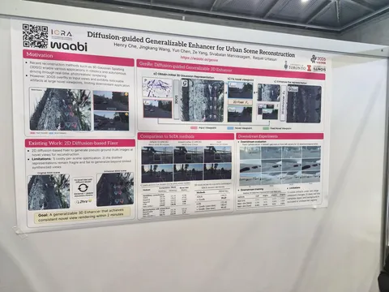

Позади второй день конференции — продолжаем делиться самым интересным об автономном вождении. Слово Максиму Спорышеву:
Среди докладчиков были те, кто буквально делает космолёты. Они рассказали о локализации для lunar landing, навигации на Марсе и детекции аномалий в космосе — только представьте, какие у них байки про продакшн.
Понравились три постера. Первый — от Waabi AI. Они реализовали 3D-реконструкцию в зоне, ближайшей к исходному треку. Хорошее решение для симуляции перестроения, но не подходящее для сложных разворотов и прокладывания нового маршрута.
Тесты проводят на дистанциях 3, 4 и 5 метров от исходных положений камер: делают feedforward-рендеринг с помощью 3D Gaussian Splatting, добавляют шум и денойзят всё диффузией, которая училась восстанавливать изображения на дистанции 3 метра.
Второй постер — об обучении через имитацию действий других участников дорожного движения. Чтобы собрать тренировочный датасет, авторы берут сцены на nuPlan, выбирают на них одного-двух хороших агентов и трансформируют их движение так, будто всё происходит от лица эго-агента. Плохие данные фильтруют по метрикам комфорта, пройденной дистанции и TTC.
С ростом количества данных эффективность обучения падает: между первыми точками графика заметна большая разница, а ближе к 100 тысячам сцен её почти нет. Для проверки использовали модель PLUTO.
На третьем постере — self-supervised-способ трекинга на лидарных облаках через кластеризации точек и фильтры Калмана. Жаль, что не удалось поймать авторов: они утверждают, что работают на уровне supervised-трекеров.
Отдельно отмечу два доклада, номинированных на звание лучших работ.
Do You Know Where Your Camera Is? View-Invariant Policy Learning with Camera Conditioning
Статья о robotic manipulation, но решаемая в ней проблема актуальна и для автономного транспорта.
Авторы показывают, что качество всех VLA сильно просаживается, если меняется положение камер: в сетапах с рандомным размещением success rate проседает в пару раз.
Решение — подавать положение камер через Plücker ray-maps. То есть задавать луч камеры для каждого пикселя шестью дополнительными числами: дельтами и моментами.
С таким кондишенингом на камеры авторы отыгрывают просадку: success rate становится в пару раз лучше, чем у обычных VLA.
FP3: A 3D Foundation Policy for Robotic Manipulation
Авторы критикуют vision-энкодеры в современных VLA и утверждают, что без трёхмерного представления о мире не обойтись.
Взамен предлагают сетап обучения с Uni3D в качестве энкодера. Он показывает довольно высокие success rates: до 90% на некоторых тасках.
Напоследок авторы показывают профит от масштабирования своего трансформера до 1,3B.
Конференция продлится до 5 июня — ещё вернёмся с новой порцией наблюдений.
#YaICRA26
404 driver not found


